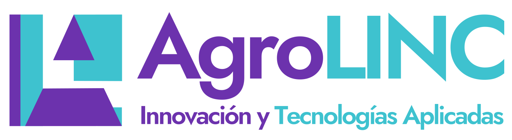

Ruta Técnica
Mapa de aprendizaje
Los cursos se desbloquean conforme completas requisitos.

Visualiza cursos completados, tecnologías habilitadas y próximos pasos.
Los cursos se desbloquean conforme completas requisitos.